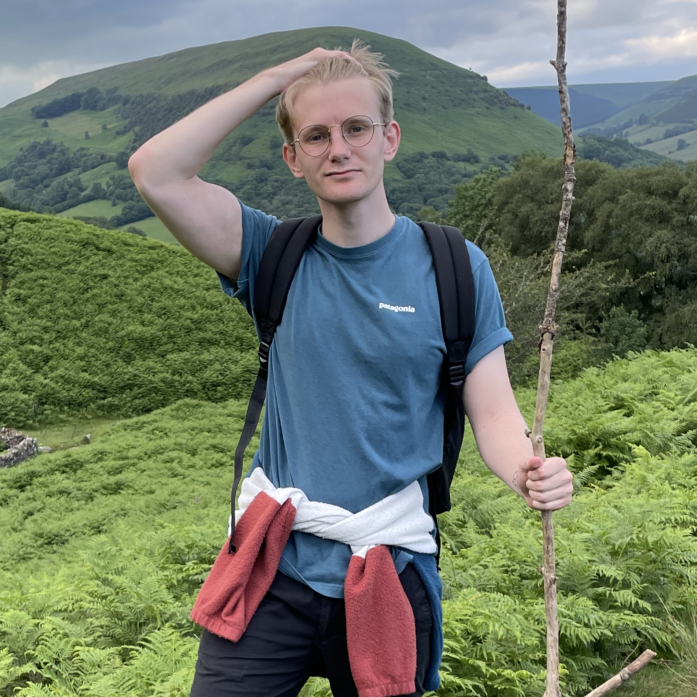

UCL Summer School: Diffusion MRI¶
Welcome to the University College London and centre for medical imaging and computing (CMIC) summer school! This course is focused on magnetic resonance imaging (MRI), more specifically diffusion MRI. By the end of this week, you should be able to understand how diffusion MRI works, how to perform tractography, limitations within this field, and the future directions the field might be heading in.
Who are we?¶
Anna Schroder (She/her) studied engineering during her undergraduate, before working as a research assistant for a year studying traumatic brain injury. In 2018, she joined the CDT in medical imaging at UCL. Her current research focusses on modelling the spead of Alzheimer's disease pathology through the brain's structural connectivity network.

Lawrence Binding (He/him) completed his undergraduate degree in Psychology and then went on to study neuroimaging for his Masters mainly focused on language and TMS. He joined UCL in 2019 and is now focused on preserving language after temporal lobe epilepsy surgery through avoidance of specific white matter connections.
Programme:¶
We have designed this course to accessible and engaging to all audiences: there will be optional coding tasks along the way for those of you who want a challenge and there will also be the answers available for those who want to see how the magic is done. The structure of this classs will be the following:
Day One: Diffusion¶
Presentation: Introduction to the History of Diffusion MRI
Test: The Diffusion Tensor
Practical: Diffusion Tensor Estimation
Day Two: Tractography¶
Presentation: Introduction to Tractography
Test: Tractography
Practical: Deterministic Tractography Algorithm
Day Three: Advanced Tractography¶
Workshop: Advantages and Disadvantages of DTI
MRtrix3: Diffusion processing & Tractography and Connectome Tutorial
Practical: Comparing algorithms
Day Four: Deep Learning¶
Workshop: Advantages and Disadvantages of tractography
Practical: Deep DTI
Data¶
We would recommend following the tutorial with the data we have provided. This is because we have used a fake diffusion scan (known as a phantom) which will be quick to run on everyones computers. Please download it from the following link: https://github.com/diffusion-tractography/diffusion-tractography.github.io/tree/main/DATA/DTI_coding_task
We hope you have fun! If you have any questions, please contact us using our emails below:
lawrence.binding.19@ucl.ac.uk
anna.schroder.18@ucl.ac.uk